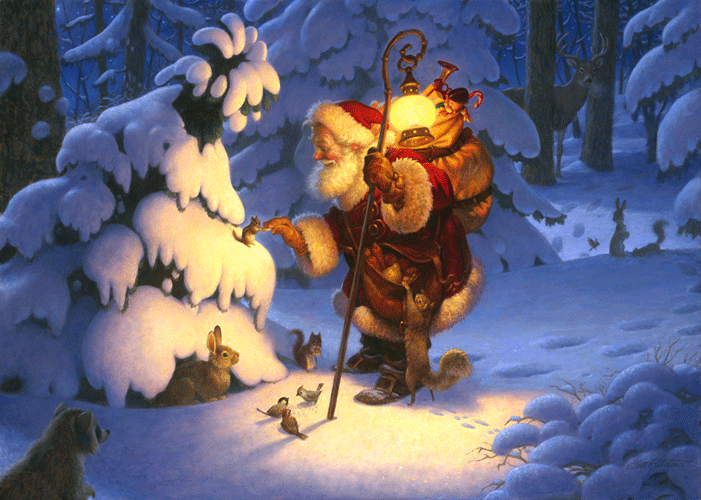

Origin of Christmas:
Christmas is an annual commemoration of the birth of Jesus Christ and a widely observed cultural holiday, celebrated generally on December 25 by billions of people around the world. A feast central to the Christian liturgical year, it closes the Advent season and initiates the twelve days of Christmastide, which ends after the twelfth night. Christmas is a civil holiday in many of the world's nations, is celebrated by an increasing number of non-Christians, and is an integral part of the Christmas and holiday season.
While the birth year of Jesus is estimated among modern historians to have been between 7 and 2 BC, the exact month and day of his birth are unknown. His birth is mentioned in two of the four canonical gospels. By the early-to-mid 4th century, the Western Christian Church had placed Christmas on December 25, a date later adopted in the East, although some churches celebrate on the December 25 of the older Julian calendar, which corresponds to January in the modern-day Gregorian calendar. The date of Christmas may have initially been chosen to correspond with one or more ancient polytheistic festivals that occurred near southern solstice (i.e., the Roman winter solstice).
Santa Claus
Santa Claus, also known as Saint Nicholas, Father Christmas, Kris Kringle and simply "Santa", is a figure with legendary, historical and folkloric origins who, in many Western cultures, is said to bring gifts to the homes of the good children on 24 December, the night before Christmas Day. However, in some European countries children receive their presents on St. Nicholas' Day, 6 December.
The modern figure of Santa Claus is derived from the Dutch figure of Sinterklaas, whose name is a dialectal pronunciation of Saint Nicholas, the historical Greek bishop and gift-giver of Myra. During the Christianization of Germanic Europe, this figure may have absorbed elements of the god Odin, who was associated with the Germanic pagan midwinter event of Yule and led the Wild Hunt, a ghostly procession through the sky. Over time, traits of this character and the British folklore character Father Christmas merged to form the modern Santa Claus known today.
